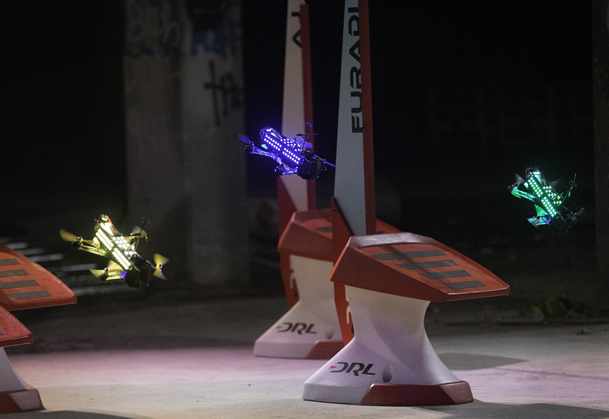

Recap + midterm map: the whole classical stack on one slide
15′
00:15
Block A — waypoints, guidance, smooth trajectories (with the poly7 widget)
35′
00:50
Concept check + feedforward widget
10′
01:00
Block B — feedforward, wind & metrics; next week's plant, previewed
30′
01:30
Break
10′
01:40
Lab briefing — Labs 6+7 (one graded report)
10′
01:50
Lab session — Labs 6+7, then the team dry-run of next week's mission (nominal model only)
60′
02:50
Debrief: dry-run numbers, team roles for Week 10
10′
Recap · the exam-ready map
Nine weeks on one slide
Nine weeks in: the classical autopilot is complete. Today adds the mission layer; next week it flies for marks.
Every arrow is a possible exam question; three favourites: why cascade needs timescale separation · what the ARE delivers · why over-smoothing an estimate destabilizes a loop.
Learning objectives
By the end of today you can…
Distinguish path / waypoints / trajectory — and pick the right abstraction per mission.
Implement waypoint guidance (acceptance radius, carrot look-ahead) as a state machine.
Explain why smoothness matters: rough references saturate real actuators.
Add feedforward and show, with numbers, why feedback alone must lag a moving target.
Labs 6+7 graded Fly a waypoint mission and a figure-eight, RMSE < 0.1 m.
tracking, aggressive flight, everything in Wks 11–14
The trajectory's derivatives are not decoration — they are the feedforward signals. A reference that knows its own acceleration can hand the controller the answer instead of making feedback rediscover it every step.
The stack · drawn
Four layers between "deliver the parcel" and four motor thrusts
Swap any layer without touching its neighbours — in Wks 11–14 you will replace only the controller box and the rest of this stack survives.
Your turn (60 s) — the Wk-10 kill switch acts at which layer? And the tilt limit? (Abort edge = mission layer; tilt clamp = controller layer. Safety lives at *every* layer, deliberately.)
First principles
Three questions a mission layer must answer
Where should I be? — the geometric problem. A path, a shape in space.
When should I be there? — the timing problem. Adding a clock turns a path into a trajectory.
What do I do when I am not there? — the tracking problem, which is Weeks 5–8, already solved.
Weeks 5–8 answered only the third. Today is the first two — and the discovery that answering them well makes the third much easier.
Why separating them matters.
A planner that ignores dynamics produces references the aircraft cannot fly. A controller that receives impossible references saturates, and no tuning fixes it.
The interface between planning and control is a feasibility contract: the planner promises references within the aircraft's limits; the controller promises to track anything that respects them. Break the contract on either side and the system fails in a way that looks like the other side's fault.
Term by term
Path, trajectory, and the derivatives that matter
Order
Name
Physical meaning
Limited by
\( \mathbf p \)
position
where
the arena
\( \dot{\mathbf p} \)
velocity
how fast
\( v_{max} \), safety
\( \ddot{\mathbf p} \)
acceleration
the tilt angle
\( g\tan\eta_{max} \)
\( \dddot{\mathbf p} \)
jerk
the body rate
attitude loop bandwidth
\( \mathbf p^{(4)} \)
snap
the torque
motor differential thrust
Why a quadrotor cares about the 4th derivative.
Read the right column upward: torque sets angular acceleration, which changes attitude, which sets translational acceleration, which integrates twice to position. Four integrations from motor command to position.
So a reference that is discontinuous in its 4th derivative demands an instantaneous torque change — a step in motor thrust — which the ESCs and the motor lag cannot deliver.
Hence minimum-snap: plan the smoothest possible 4th derivative and the aircraft never has to do the impossible.
Detail, done properly
Polynomial trajectories, and why 7th order
Between two waypoints, write each axis as a polynomial in time:
\[ p(t) = \sum_{k=0}^{n} c_k t^k \]
Boundary conditions at each end: position, velocity, acceleration, jerk = 4 per end, 8 total.
Eight conditions ⇒ eight coefficients ⇒ 7th-order polynomial. That is where the number comes from — not tradition.
Minimising \( \int \lVert p^{(4)}\rVert^2 dt \) over a multi-segment spline is a quadratic program — small, convex, solved in milliseconds.
The connection you should notice.
A convex QP, minimising a quadratic cost, subject to linear equality constraints.
That is the same mathematical object as Week 11's MPC — the difference is only that MPC re-solves it every control step from the measured state, while a planner solves it once, offline.
Trajectory generation is open-loop MPC. Say that sentence in your Week-15 viva and you will have shown you understand both.
Block A · interactive
Seventh-order segment — boundary conditions in, feasibility out
Predict before you compute. 2 m in 3 s: peak acceleration? Peak tilt? Now halve T in your head before you drag it — by what factor does acceleration rise?
command the next point; switch inside \( r_{acc} \)
trivial to implement
corners are rounded unpredictably; stops and starts
Carrot / look-ahead
chase a point sliding \( L \) ahead along the path
smooth, one tuning parameter
cuts corners by \( \approx L \); can shortcut tight turns
Trajectory tracking
follow \( \mathbf p_r(t) \) with feed-forward
accurate, predictable, fast
needs a feasible, timed reference
Choosing \( L \) for the carrot.
Too small: the aircraft oscillates about the path (it is chasing a point it keeps reaching). Too large: it cuts the corner and may leave the corridor.
Rule of thumb: \( L \approx v \times \) (outer-loop time constant) \( = 1.0 \times 0.45 \approx 0.45 \) m at our speeds. Look ahead by roughly one response time.
Which to use in Week 10.L4's box mission: waypoint hopping with a generous acceptance radius. It is the most robust to position noise, and the task rewards visiting corners, not elegance between them.
Save trajectory tracking for the figure-eight in Lab 7, where smoothness is the graded quantity.
Derivation · click to advance interactive
Why feedback alone must lag — the proof in four steps
2required acceleration: \( \ddot{\mathbf p}_r = -A\omega^2 \mathbf p_r/A \), magnitude \( A\omega^2 \), pointing inwardCentripetal acceleration is not optional — without it the aircraft flies straight off the circle. Somebody must supply it.
3with feedback only, \( \mathbf a_{cmd} = K_p \mathbf e \), so at steady state \( K_p \lVert\mathbf e\rVert = A\omega^2 \)The error is the only source of command. So the error must be exactly large enough to generate the needed acceleration.
4\( \lVert \mathbf e \rVert = A\omega^2/K_p \) — a permanent, structural lag, pointing inwardNot a tuning failure. With \( A = 1.2 \) m, \( \omega = 0.8 \), \( K_p = 4.9 \): \( 0.157 \) m of error, forever. Raise \( K_p \) tenfold and it shrinks tenfold — but so does your stability margin.
Feed-forward supplies \( \ddot{\mathbf p}_r \) directly, so the error no longer has a job to do and collapses to whatever the disturbances demand. The same aircraft, the same gains, ten times the accuracy — for one term you can compute analytically.
Block A
Waypoint guidance = a small honest state machine
Acceptance radius: switch to the next waypoint inside \(r_{\text{acc}}\) (0.2–0.3 m for us). Too small → the quad orbits a point it keeps almost reaching.
Carrot / look-ahead: chase a point sliding along the segment ahead — turns corner-hitting into curve-cutting; one parameter (look-ahead distance) trades cut vs wobble.
Mission wrapper: IDLE → TAKEOFF → WP(i) → LAND, with an abort edge from every state.
The abort edge is not optional. Lab-6 rule: your mission script must contain, in code, the transition that abandons the mission and lands — and you must trigger it deliberately once, in simulation, and show the trace. Safety code that has never run is safety theatre.
Mental picture first
What "aggressive trajectory" means when it's real

Drone Racing League airframes. A racing line through gates is a trajectory at the edge of the feasible set — tilt near 90°, thrust near max, every derivative mattering. Photo: Melanie Wallner, Wikimedia Commons, CC BY-SA 4.0.
A racing gate line is not "waypoints, but faster": at these speeds the reference's own derivatives dominate the motor commands — feedback alone cannot manufacture them in time.
Racing autonomy (and mission M2) lives exactly in the machinery of this lecture: smooth references, feedforward, and knowing the aircraft's limits as constraints.
Hold the picture: everything below is what lets a controller fly a line like this without being surprised by its own reference.
Mental picture first
A mission is a promise about the future
Racing airframes at the limit. A racing line is a trajectory whose every derivative has been checked against what the aircraft can deliver. M. Wallner, Wikimedia Commons, CC BY-SA 4.0.
Until today, every reference we gave the aircraft was a constant: 'be at this point'. The controller had all the time in the world to get there.
A mission is different: 'be here, at this speed, now' — a promise about the future, renewed every millisecond.
That changes the controller's job from correcting to anticipating — and anticipation needs information the reference must supply.
Everything in this lecture follows from one observation: a reference that knows its own derivatives can hand the controller the answer, instead of making feedback rediscover it from error.
Detail, done properly
Time scaling: one trajectory, many tempos
Given a feasible trajectory, replay it at rate \( \alpha \): \( \tilde{\mathbf p}(t) = \mathbf p(\alpha t) \). Then:
One line, and 'how fast can we fly this?' becomes a computation. This is what a racing-line optimiser does — and what you should do before the Week-12 tempo stress test.
Concept check
Three questions before the lab
Q1 — You halve the acceptance radius to be “more accurate”. The mission now takes twice as long and sometimes stalls. Why?
The radius is now comparable to your position noise.The aircraft cannot reliably prove it has arrived, so it hovers awaiting a measurement the noise floor forbids. Acceptance radius is a statistical parameter: \( r_{acc} \gtrsim 3\sigma \).
Q2 — Your figure-eight tracks beautifully at \( \omega = 0.8 \) and falls apart at \( \omega = 1.6 \). Before touching gains, what do you compute?
The required tilt: \( a = 2A\omega^2 \) rises fourfold, so tilt goes from about 9° to 32°.If that exceeds your clamp the reference is infeasible and no gain fixes it. Check feasibility before tuning — always in that order.
Q3 — Feed-forward removes the tracking lag. Does it also remove the need for feedback?
No — it removes feedback’s need to fight the reference.Feedback still handles wind, model error and every disturbance the plan did not foresee. FF flies the plan; FB flies the surprises. Remove feedback and the first gust ends the flight.
Block A
Why smoothness is a hardware requirement, not an aesthetic
A step in position wants infinite acceleration; a corner wants a torque spike (derivative kick, fix #4). Real motors decline. The reference must be differentiable as many times as the chain differentiates it — for a quad, ~4 (hence "minimum-snap").
Differential flatness (name-drop with content): quad dynamics are flat in \( (x,y,z,\psi) \) — any sufficiently smooth position+yaw trajectory determines full states and inputs algebraically. That's the license behind min-snap planners and drone racing. We use its practical corollary: plan smooth, get feasible. quadsim's trajectories.figure_eight() hands you smooth \( \mathbf{p}_r,\dot{\mathbf{p}}_r,\ddot{\mathbf{p}}_r \).
Formally, once
Differential flatness — the licence behind everything today
Fact (Mellinger–Kumar, 2011).
The quadrotor is differentially flat in \( (x, y, z, \psi) \): given any sufficiently smooth trajectory of these four outputs, every state and every input is determined algebraically from the outputs and their derivatives — attitude from \( \ddot{\mathbf p} \) (the tilt map, exactly), body rates from the jerk, torques from the snap.
Consequence 1 — planning splits from control: plan only 4 curves, not 12 states; feasibility = bounds on their derivatives. This is why the guidance stack can be layered at all.
Consequence 2 — minimum-snap: since torque rides on the 4th derivative, penalise \( \int \lVert \mathbf p^{(4)} \rVert^2 dt \) ⇒ piecewise 7th-order polynomials through waypoints — a small QP (Wk-11 foreshadow), and the industry-standard smooth-path generator.
Consequence 3 — your feedforward is exact: the \( \ddot{\mathbf p}_r \) term you wire in Lab 7 is not a heuristic; it is the flatness map's first bite.
Worked example (tempo vs the tilt budget).
Figure-eight \( A = 1.2 \) m at \( \omega = 0.8 \) rad/s ⇒ peak \( a \approx 2A\omega^2 = 1.5 \) m/s² ⇒ tilt ≈ \( \arctan(1.5/9.81) = 8.9^\circ \). Double the tempo: \( a = 6.1 \) m/s² ⇒ 32° — past the 25° demo clamp; the mission is infeasible before any controller runs. Feasibility math beats tuning heroics.
Concept check · 00:50
Predict before you compute
Q1 — Pure feedback (no FF) tracking a circle at constant speed: the steady tracking error is…
A. zero — PD handles it
B. nonzero, pointing inward — the error generates the centripetal acceleration
C. nonzero, pointing outward
B.Someone must supply \(v^2/r\); with FB alone it's the error, scaled by \(1/K_p\). Feedforward supplies it from the reference instead, and the error collapses. You'll measure exactly this in Lab 7.
Q2 — Halving the figure-eight period multiplies the required peak acceleration by…
×4(\( a \propto \omega^2 \)). Aggressiveness is quadratic in tempo — the innocent-looking "just fly it faster" is how demo-day tilt limits get discovered. Budget speed like an engineer.
Interactive
Feedback vs feedback + feedforward
Toggle FF off: the lag is structural. Wind on, FF on: feedback's real job is disturbances.
Detail, done properly
The mission state machine, written out
class Mission:
def step(self, t, x):
if self.state == IDLE:
if self.armed and self.go: self.state = TAKEOFF
elif self.state == TAKEOFF:
self.ref = hover_at(self.home, self.h_target)
if abs(x.z - self.h_target) < 0.10 and abs(x.vz) < 0.15:
self.state, self.i = CRUISE, 0
elif self.state == CRUISE:
self.ref = self.waypoints[self.i]
if norm(x.pos - self.ref.pos) < self.r_acc:
self.i += 1
if self.i >= len(self.waypoints): self.state = LAND
elif self.state == LAND:
self.ref = descend(self.ref, rate=0.3)
if self.touchdown_detected(x): self.state = DISARM
if self.abort: # <-- from ANY state
self.state = LAND; self.ref = descend(x.pos, rate=0.5)
return self.ref
Every transition has an explicit test, and every test uses a tolerance, not equality.
The abort block sits outside the state logic deliberately — it must be reachable from every state, including states you add later.
Why state machines and not if-chains.
Because 'what is the aircraft doing right now?' must have exactly one answer, loggable as a single integer. When a flight goes wrong, the state trace tells you what the aircraft thought it was doing — which is usually the whole diagnosis.
Log the state variable. Every flight.
Detail, done properly
Metrics, defined precisely enough to be gradeable
Metric
Definition
What it catches
Our target
RMSE
\( \sqrt{\tfrac1T\int \lVert \mathbf p - \mathbf p_r\rVert^2 dt} \)
average quality
< 0.10 m, no wind
Max deviation
\( \max_t \lVert \mathbf p - \mathbf p_r \rVert \)
the safety question
< 0.30 m
Control effort
\( \int \lVert \mathbf u \rVert^2 dt \)
battery, heat, wear
report it, compare fairly
Recovery time
time to re-enter tolerance after a disturbance
robustness
< 2 s
Constraint violations
count and magnitude
did it stay legal?
zero
Why RMSE alone is not enough.
A controller can have excellent RMSE and one catastrophic 1.5 m excursion — and RMSE will barely notice, because it averages. Max deviation is the number that decides whether the aircraft hits a wall.
Report both, always. In the final project, a comparison that quotes only RMSE will be asked about the maximum.
The fair-comparison rules.
Same trajectory · same limits · same wind seed · same metric code · same duration, with the first lap discarded as transient.
Write the metric function once, import it everywhere. A metric computed two slightly different ways is the commonest source of accidentally dishonest comparisons.
Worked example · by hand
Is this mission feasible before we fly it?
Proposed L4 mission: a 1 m box, corners visited in 8 s total, tilt limited to 12°.
Perimeter 4 m in 8 s ⇒ average 0.5 m/s.
Each corner is a 90° turn. Simplest profile: decelerate to rest, turn, accelerate.
\( a_{max} = g\tan 12^\circ = 2.08 \) m/s². Accelerate to 0.5 m/s: \( t = 0.24 \) s over 0.06 m.
Per side: accelerate 0.06 m + cruise 0.88 m + decelerate 0.06 m = 0.24 + 1.76 + 0.24 = 2.24 s.
Four sides: 8.96 s > 8 s. Marginally infeasible.
Three honest fixes.(a) Allow 9.5 s — the cheapest fix, and nobody is grading elegance. (b) Raise the tilt limit to 15° ⇒ \( a = 2.6 \) m/s² ⇒ 8.5 s. Still not 8. (c) Round the corners (carrot guidance) so the aircraft never stops ⇒ comfortably under 8 s, at the cost of not passing exactly through the corners.
All three are legitimate. Choosing among them is mission design, and it took five lines of arithmetic rather than five flights.
(3 min) — Repeat for a 2 m box in the same 8 s. Feasible? (Perimeter 8 m at 2.08 m/s²: cruise speed would need to be ~1.05 m/s and the total lands near 8.4 s — borderline again, and now the aircraft is moving fast enough that a 0.3 m excursion matters. Bigger is not automatically harder to control, but it is always harder to schedule.)
Detail, done properly
Wind: what it does, and what can be done about it
Wind type
Model
Effect
Best defence
steady breeze
constant force
steady position offset
integral action
gust
step force
transient excursion
bandwidth + headroom
turbulence
filtered noise
continuous jitter
reduce gains, accept it
ground/wall effect
state-dependent thrust change
surprise near surfaces
keep clear; model if you must
Sizing the indoor problem.
An air-conditioning draught of 0.5 m/s against \( C_dA \approx 0.01 \) m²: \( F = \tfrac12(1.225)(0.01)(0.25) \approx 0.0015 \) N — negligible.
But the downwash reflecting off a nearby wall can produce a fraction of a newton, unpredictably. That is why the Week-10 arena keeps the aircraft a metre from the barrier, and why teams that hug the edge have a bad time.
Indoors, the aircraft is its own weather.
In simulation, --wind 0.5 injects a steady force plus turbulence. Use it to test that your integral action and headroom are real, not decorative — and use the same seed for every controller you compare.
Block B · 01:00
Metrics: how tracking gets graded — in labs, the workshop, and the final project
RMSE over the run — the headline number (course bar: < 0.1 m, no wind).
Max deviation — safety corridor half-width; the Week-10 workshop and REQ-M3-1 both care about this one.
Control effort \( \int\lVert\mathbf{u}\rVert^2 \) — flight time is energy; grades per joule matter in comparisons.
Under disturbance: recovery time and steady offset with wind on.
Benchmarking discipline (rehearse it now, it's the final-project law): same trajectory, same limits, same wind seed, same metric script for every controller you compare. A comparison with moving conditions is marketing, not engineering.
Block B · next week, previewed
Next week: the same controller, a different aircraft
Your controller assumes
Next week's plant has
motors answer instantly
a first-order lag, 50–120 ms
no air
drag, linear + quadratic
0.65 kg exactly
+4 … +14 % you were not told
GPS fixes on time
fixes 120–300 ms old
constant wind at most
a mean gust from a random heading, plus wander
What the workshop asks.
Fly this week's mission on that plant, unmodified, and explain the difference from the data — three mechanisms, one fix. The numbers are hidden behind your team id; the effect classes are public. Today's job is only to make sure the mission runs — that is the dry-run in the last twenty minutes of the lab.
Nothing to bring but a laptop with the environment working and your team's controller on main. The instructor's F570 flies for fifteen minutes at the start of the session so that every hidden effect has a face.
The aircraft in this room
How the F570 does position — flow and lidar, two ways
Read the third row.
This is the deepest distinction in indoor navigation. Flow is dead reckoning — smooth, high-rate, and it walks away over minutes. Lidar is absolute — noisier, lower-rate, but anchored to something that does not move.
Exactly the gyro-versus-accelerometer split from Week 8, one level up. The same fusion argument applies, and a good indoor system uses both.
Your team aircraft has flow only. So your position estimate will drift, and the honest design question is not how to stop it but how long a hold you can promise before it matters — which is exactly what the L3 60-second task measures.
Common failure gallery
Six ways a mission goes wrong
Symptom
Cause
Fix
Orbits a waypoint forever
acceptance radius smaller than position noise
\( r_{acc} \ge 3\sigma_{pos} \); ours ≈ 0.25 m
Corner overshoot into the barrier
no deceleration planning; carrot too long
plan the stop, or shorten \( L \)
Stalls between waypoints
transition test never true (equality, not tolerance)
tolerances everywhere; add a timeout
Perfect on the nominal model, wanders on the team plant
a mean gust your loop has no integrator against
shorter legs; a horizontal integrator (with a clamp)
Aborts, then re-arms and continues
abort did not latch
latch it; require a deliberate reset
Lands, then tips over
no touchdown detection
three conditions AND-ed, with a hold time
Rows 1 and 6 are the two that will cost your team its Week-10 run. Both are ten-line fixes and both are invisible until the plant is not the one you tuned on.
Take-home set
Six problems — solutions posted Friday
Derive the 7th-order polynomial coefficients for a 1 m rest-to-rest move in 2 s with zero velocity, acceleration and jerk at both ends. Plot all four derivatives.
Show analytically that the steady tracking error of a PD controller on a circular reference is \( A\omega^2/K_p \), directed inward.
For the figure-eight (\( A=1.2 \) m, \( \omega=0.8 \) rad/s), compute peak velocity, acceleration and required tilt. Then repeat at \( \times 1.5 \) and \( \times 2 \) tempo and identify where it becomes infeasible at a 25° limit.
Implement carrot guidance with \( L \in \{0.2, 0.5, 1.0\} \) m on a square path. Measure corner-cutting distance and path RMSE for each; recommend a value with reasoning.
Add a 2 s flow dropout mid-mission to your Lab-6 run. What does your state machine do? What should it do?
Design the acceptance-radius and timeout parameters for the Week-10 square mission from your own measured position noise. Justify each number.
Question 6 is not hypothetical — those are the parameters your mission script carries into next week's workshop. Bring your numbers to the dry-run.
Concept map
Week 9, in one page
The four layers, and the one interface that matters: the planner's promise that its references are flyable.
Concept
One-line statement
Where it returns
path vs trajectory
the clock is what makes it feasible or not
Wk 11 preview horizon
derivative ladder
snap ⇒ torque; smoothness is a hardware requirement
min-snap, racing lines
feed-forward
supply what you know; feedback handles surprises
Wk 12 MPC preview
guidance FSM
tolerances, timeouts, and a latching abort
Wk 10 workshop, every real autopilot
metrics
RMSE and max deviation, fairly measured
the final-project rubric
feasibility first
five lines of arithmetic beat five flights
every mission you design
Looking ahead
Next week: it flies for marks — on a plant you were never shown
The classical autopilot is complete: model, control, estimate, plan. Nothing structural is missing.
Week 10 is the reality-gap workshop — 7 teams, the same mission you fly today, on each team's hidden TeamPlant; the gap analysis carries most of the case-study grade.
It is also the final-project kickoff: one mission, one method, your own vehicle, and the assessment that will occupy Weeks 11–15.
Bring to Week 10: a laptop where 08_team_mission.py --team T<n> --dry-run runs, your team's controller on main with a git hash, and the four Week-8/9 plotting snippets to hand.
Do not tune tonight. The workshop measures the controller you already have; a midnight retune only makes the "before" column unreproducible.
Detail, done properly
Corner handling: three strategies, drawn in numbers
Strategy
Path error at corner
Time cost
Best for
Stop-turn-go
zero — passes exactly through
+0.5 s per corner
surveying, precise waypoints
Carrot with look-ahead \( L \)
\( \approx L/2 \) inside the corner
none
our L4 box mission
Planned rounded corner (radius \( r \))
exactly \( r \), by design
small
racing, cinematography
Sizing a planned corner.
A rounded corner of radius \( r \) at speed \( v \) needs centripetal acceleration \( v^2/r \).
At \( v = 0.5 \) m/s with \( a_{max} = 2.08 \) m/s²: \( r_{min} = 0.25/2.08 = 0.12 \) m.
So a 12 cm corner radius is the tightest this aircraft can turn at that speed without leaving its tilt budget — and the arithmetic took one line.
The choice is a specification, not a preference.
'Pass exactly through the corners' and 'never stop' are incompatible for an underactuated vehicle. Someone must decide which matters, and that decision belongs in the mission spec — before anyone tunes anything.
One level deeper
Differential flatness, and what it licenses
The result (Mellinger & Kumar, 2011).
A quadrotor is differentially flat in \( (x,y,z,\psi) \): choose any sufficiently smooth trajectory for those four outputs and every state and every input follows algebraically — attitude from \( \ddot{\mathbf p} \), body rates from jerk, torques from snap.
Consequence 1 — planning decouples from control. Plan four curves, not twelve states. This is why the layer diagram works at all.
Consequence 2 — feasibility is a derivative check. Bounded snap ⇒ bounded torque. No simulation required to reject a bad plan.
Consequence 3 — your Lab-7 feed-forward is exact, not a heuristic: it is the flatness map's first term.
Flatness is why aggressive quadrotor flight became tractable in the 2010s, and it underlies every min-snap planner and racing-line optimiser you will meet. We use its practical corollary all term: plan smooth, get feasible.
Detail, done properly
Replanning: what happens when the world moves
A trajectory is a plan made at one instant. If the aircraft is pushed off it, do you return to the plan or make a new one?
Return: simple, keeps the timing promise, but can demand a violent catch-up if the excursion was large.
Re-time: slide the clock so the aircraft rejoins at the nearest point. Gentle, but the mission takes longer.
Replan: generate a fresh trajectory from the current state. Best, and expensive.
Where this is going.
Option three, executed every control step, is Model Predictive Control — Week 11.
Notice how naturally the need arises: the moment you have a plan and a disturbance, you face the replan question. MPC is not an exotic method looking for a problem; it is the obvious answer to a question this lecture just raised.
(2 min) — Your aircraft is blown 0.4 m off a figure-eight. Which option would you choose for the Week-10 mission, and why? (Re-time. Returning to the plan means catching up at a speed you did not budget for — and the metric that matters is maximum deviation, which a violent catch-up makes worse.)
01:30 Break — 10 minutes
After the break: Labs 6+7 for everyone, then the team dry-run of next week's mission in the last twenty minutes.
Detail, done properly
Multi-segment trajectories: stitching, and the continuity that matters
A mission is many segments. Each is a polynomial; the question is what must match at the joins.
Position only (C⁰): the aircraft jerks at every waypoint — velocity jumps.
+ acceleration (C²): tilt is continuous. This is the practical minimum for a quadrotor.
+ jerk (C³): body rates continuous. Needed for aggressive flight.
Why C² is the threshold.
Acceleration maps directly to tilt angle (Week 6). A discontinuity in acceleration is a step in commanded attitude — and your inner loop, however well tuned, needs ~0.1 s to follow a step.
So a C¹ trajectory hands the aircraft a demand it structurally cannot meet at every single waypoint. The corner-rounding you see in real flight logs is often not sloppy control — it is a controller doing its best with an infeasible reference.
Detail, done properly
Yaw along a trajectory: three sensible policies
Policy
\( \psi_r(t) \)
Used for
Watch out for
Fixed heading
constant
inspection, stable video
none — the simplest choice
Tangent to path
\( \arctan(\dot y/\dot x) \)
'fly like an aeroplane', FPV
undefined at zero speed; spins at waypoints
Point at a target
\( \arctan\frac{y_t - y}{x_t - x} \)
cinematography, tracking
fast yaw demands near the target
The zero-speed trap.
Tangent-following divides by velocity. At a waypoint where the aircraft momentarily stops, \( \dot x = \dot y = 0 \) and the heading command becomes noise — the aircraft pirouettes unpredictably.
Cure: freeze \( \psi_r \) whenever \( \lVert\dot{\mathbf p}\rVert < v_{thresh} \) (say 0.15 m/s). Two lines, and it removes a spectacular failure mode.
For Week 10.Use fixed heading. Yaw is your weakest axis (Week 3), it contributes nothing to the L1–L5 tasks, and every degree of yaw activity is authority spent for no marks.
Deliberately not using a capability is an engineering decision, and a defensible one.
Detail, done properly
Reading a tracking plot like a clinician
Where an error originates tells you which layer to fix — and the shape of the error tells you where it originated.
Error shape
Origin
Fix at which layer
Constant inward offset on curves
missing feed-forward
controller (add \( \ddot{\mathbf p}_r \))
Growing lag at higher speed
reference infeasible for the tilt limit
planner (slow it down)
Oscillation at ~0.5 Hz
outer-loop gains too hot
controller (Week 6)
Sharp spike at each waypoint
C¹ discontinuity in the reference
planner (stitch with C²)
Drift in one direction only
estimator bias or wind
estimator / integral action
Note that two of the five are planner problems that look exactly like controller problems. Diagnosing the wrong layer is how teams spend an evening retuning a perfectly good controller.
The instructor's aircraft
What a 3 m box does to a demonstration
The F570 you will watch next week cannot fly a waypoint mission — its working volume in B201a is a 3 m box at the front of the room.
But it can show every other element of this lecture and the next: a smooth altitude profile, a hover under a hand push, a line-and-back that overshoots, a take-off with extra mass that sags.
So the demonstration uses short trajectories, and each one is chosen to make one hidden effect of the team plant visible.
And the team plant does the rest.
The real aircraft has the physics but not the volume or the repeatability; the team plant has the volume, the repeatability and the same five effects — with their sizes hidden. Between the two you see every idea in this lecture demonstrated, just not on the same instrument.
Real programmes almost always split capability across rigs, and knowing which rig answers which question is a large part of experimental engineering.
Take-home set
Six problems — solutions posted Friday
Derive the 7th-order polynomial for a 1 m rest-to-rest move in 2 s with zero velocity, acceleration and jerk at both ends. Plot all four derivatives and mark the peak of each.
Prove the steady tracking error of a PD controller on a circular reference is \( A\omega^2/K_p \), directed inward.
For the figure-eight (\( A = 1.2 \) m, \( \omega = 0.8 \)), compute peak velocity, acceleration and tilt; repeat at \( \alpha = 1.5 \) and \( 2 \), and find where a 25° clamp is exceeded.
Implement carrot guidance with \( L \in \{0.2, 0.5, 1.0\} \) m on a square. Measure corner-cutting and path RMSE; recommend a value with reasoning.
Inject a 2 s position-measurement dropout mid-mission. Describe what your state machine does, and what it should do.
Using your own measured position noise, choose the acceptance radius and timeouts for the Week-10 box mission. Justify every number.
Question 6 is not hypothetical — those are the parameters your mission script carries into next week's workshop. Bring your numbers to today's dry-run.
Lab 7:figure_eight() with velocity + acceleration feedforward; then --wind 0.5.
Metrics script on both: RMSE, max deviation, effort.
Pass graded: mission completes with a 3-D plot; figure-eight RMSE < 0.1 m (no wind); wind run analyzed (where does the error grow, and why there?).
Predict first: write your expected RMSE with FF off before you run it.
Traps: acceptance radius 0 → waypoint orbit · FF wired into the wrong frame (world, not body!) · comparing wind runs across different seeds.
Lab session · 01:50 → 02:50
Labs 6+7, then the dry-run
Labs 6+7 — 02:05 mission flies · 02:20 fig-8 < 0.1 m · 02:30 wind analyzed, metrics in report
Team dry-run (02:30 → 02:50) — python examples/08_team_mission.py --team T<n> --dry-run on every team member's laptop: nominal model only, RMSE 0.226 m for every team. Environment, team-id string and roles settled today, so next week's sixty minutes are all diagnosis.
Assessed: Lab Report 6 — 5% (last of the six lab reports). Marked on: mission completes with abort edge in code · fig-8 RMSE < 0.1 m · wind analysis explains *where* and *why* error grows.
Team project · Wk 9 of 10 — the workshop is in 7 days
Go / no-go board
1 · ControllerOne student.py (or the decision to use cascade) on main, git hash recorded — frozen after today
2 · Environment--dry-run passes on every member's laptop; team-id string agreed and written down
3 · PlotsThe four diagnostic snippets (commanded vs applied, error heading, take-off z, estimate vs truth) copied into a gap.py skeleton
4 · RolesWho runs, who plots, who writes each mechanism paragraph, who presents the 5-minute debrief
5 · ReadingInstructor-demo table (five flights, five effects) read, predictions written
No-go on card 1 or 2 → the workshop hour is spent debugging instead of diagnosing, and the case study has no "before" column. Everything else can be fixed on the day.
Before you leave
The traps, named
The trap
The truth
"Feedback with high gains ≈ feedforward."
Feedback needs an error to act; on a moving target that error is structural (the inward lag you measured). FF supplies what is known; no gain substitutes for knowledge.
"A path is a trajectory."
Only after time-parameterisation — and the clock is where feasibility lives (×2 tempo = ×4 acceleration).
"Waypoint reached ⇒ e = 0 exactly."
Acceptance radius, or orbit forever. Guidance is hysteresis and state machines, not equalities.
"The abort path can be added after the mission works."
Safety code untested is safety theatre. The abort edge runs in every Lab-6 run, deliberately triggered at least once, trace in the report.
Wrap-up
What to remember
Trajectory = path + clock; its derivatives are the feedforward that lets feedback do its real job: disturbances.
Guidance is a state machine; the abort edge is a first-class citizen.
Smoothness is feasibility: aggressiveness scales ×\( \omega^2 \); the chain differentiates your reference four times.
Benchmark like a scientist: fixed trajectory, limits, seeds, metrics. This becomes law in the final project.
Next week: the reality-gap workshop. Fly the controller you froze today. Log everything.
Reading: Mellinger & Kumar 2011 (min-snap, skim §III) · lab report 6 (Labs 6+7) due before Wk 10 · bring: a laptop where the dry-run passes, and your frozen controller.